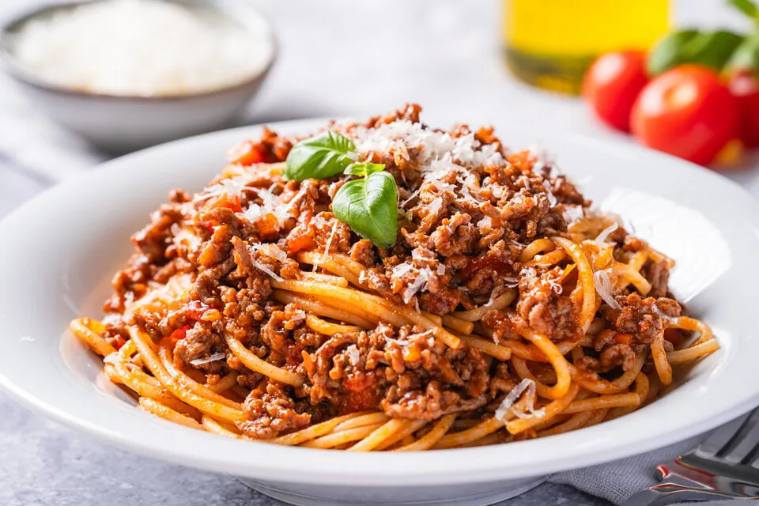

Spaghetti Bolognese
Schmackhafte Spaghetti Bolognese gelingen auch zu Hause kinderleicht. Mit nur 40 Minuten Aufwand kannst du ein leckeres, herzhaftes Abendessen für die ganze Familie zaubern.

Schmackhafte Spaghetti Bolognese gelingen auch zu Hause kinderleicht. Mit nur 40 Minuten Aufwand kannst du ein leckeres, herzhaftes Abendessen für die ganze Familie zaubern.

Bananen mögen es warm - kühl und frostig ist ihr natürlicher Feind! Wenn du sie in den Kühlschrank legst, passiert etwas Merkwürdiges: Die Schale wird dunkel, fast schwarz, und das sieht nicht nur unappetitlich aus - auch der Geschmack leidet. Im Kühlschrank verlangsamt sich zwar die Reifung des Fruchtfleisches, aber die Kälte zerstört die Zellstruktur der Bananenhaut. Das führt dazu, dass die Banane matschig wird und ihr süßer, aromatischer Geschmack verloren geht. Fazit: Bananen gehören auf den Obstteller, nicht in die Kühlung. Dort reifen sie gleichmäßig, bleiben saftig und lecker - und sehen dazu noch richtig einladend aus!